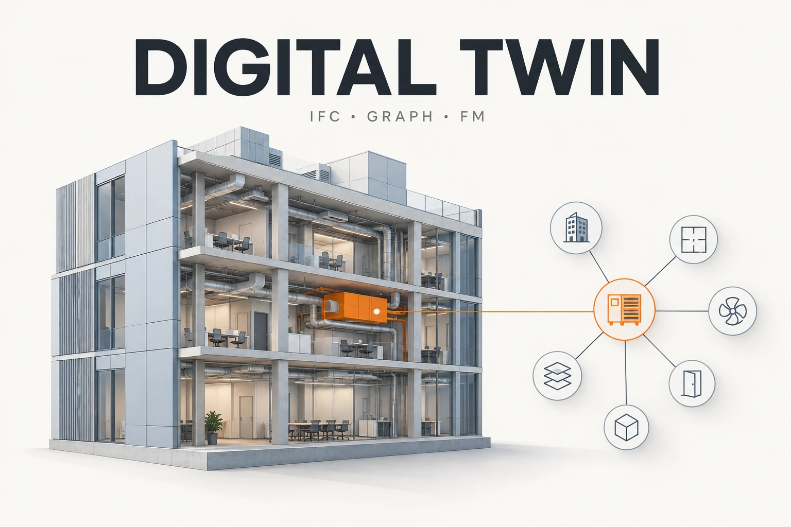
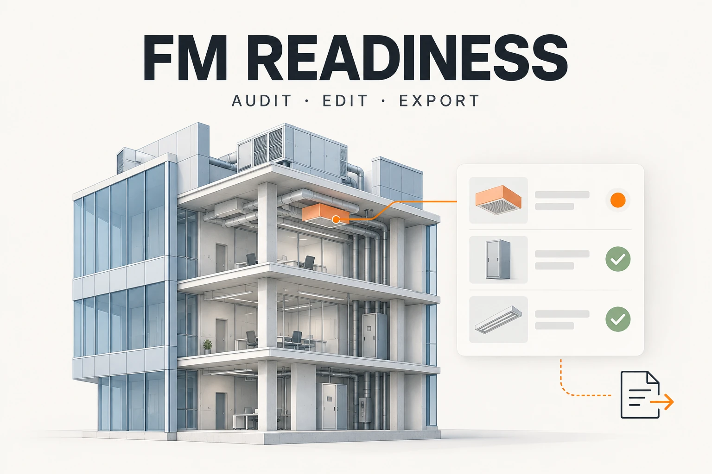
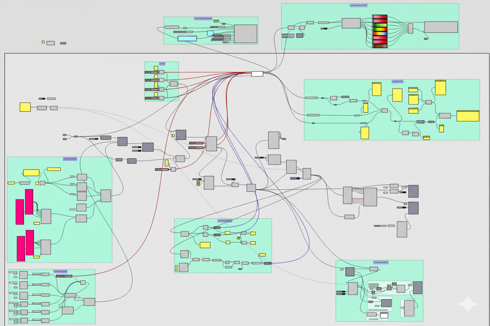
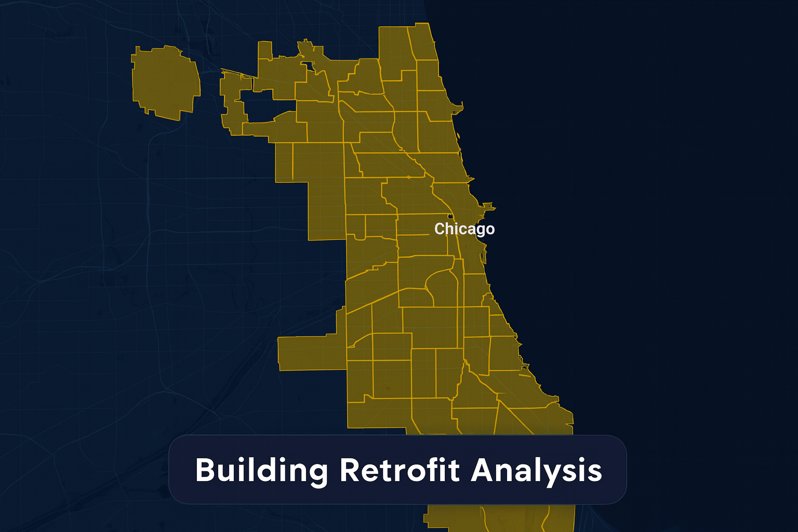

Portfolio
Independent personal projects, created out of my interest in the built environment, building performance, and data analytics. I am the sole creator of every project presented here.

Digital Twin for Built Environment
This project is a digital twin web application designed for 3D building model visualization and embodied carbon analysis.
View Project
Revit Plugin for Facility Management
Autodesk Revit add-in for COBie data auditing, guided parameter fixing, bulk editing, and IFC export — bridging BIM authoring and FM handover.
View Project
Multi-Objective Building Performance Optimization
Evolutionary optimization framework for balancing cooling, heating, and overheating performance in buildings using Wallacei’s advanced analytics.
View Project
Chicago Building Retrofit Analysis Platform (with NLP-Powered Classification)
Classifying and mapping energy retrofits using spaCy NLP and interactive MapLibre maps.
View Project
Chicago Building Energy Retrofit Prioritization
Interactive 3D MapLibre map prioritizing Chicago building retrofits through energy-benchmarking analytics, powered by free OpenFreeMap tiles.
View Project
Environmental Performance Analysis of CKC Building, Central Hong Kong
Comprehensive environmental analysis including weather patterns, sunpath studies, direct sun exposure, radiation mapping, and view analysis for sustainable design optimization.
View Project
Modeling Urban Heat and Outdoor Thermal Comfort in Amsterdam
An independent Dragonfly/UWG study comparing reference weather with modeled urban conditions in a 0.65 km² Amsterdam district, with thermal-comfort analysis and an exploratory green-roof scenario.
View Project
Energy Dashboard
Energy Consumption Analysis - Data-driven insights for reducing energy wastage and improving efficiency
View Project
Building‑Level Electricity Analytics & Forecasting
Advanced analytics platform for building-level electricity consumption patterns with predictive modeling capabilities
View Project